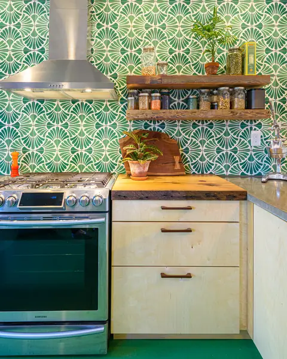
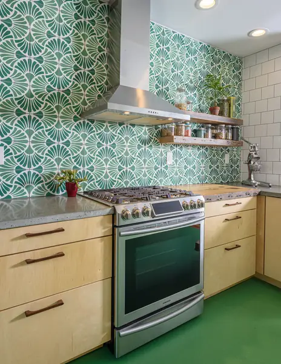
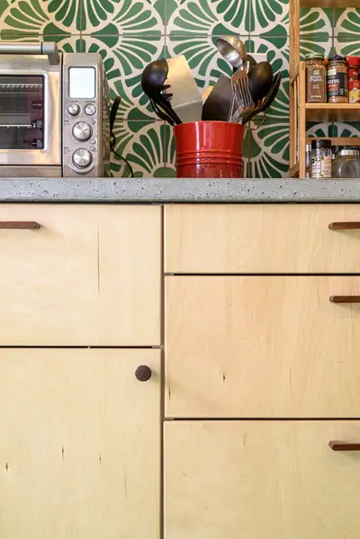
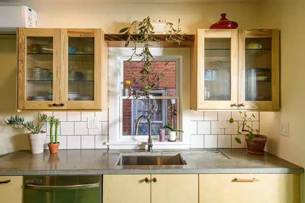
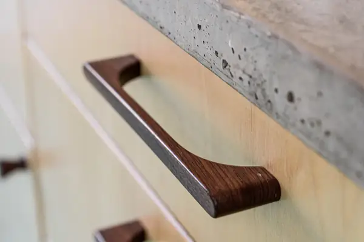
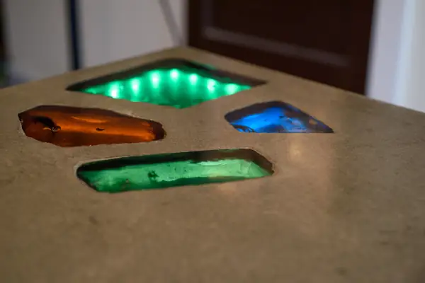
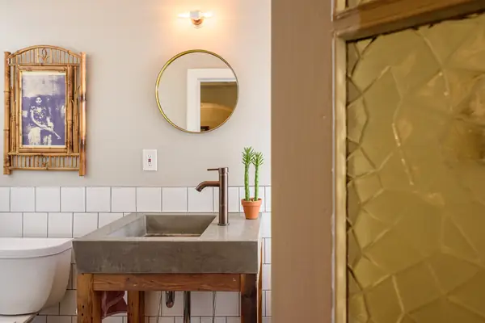
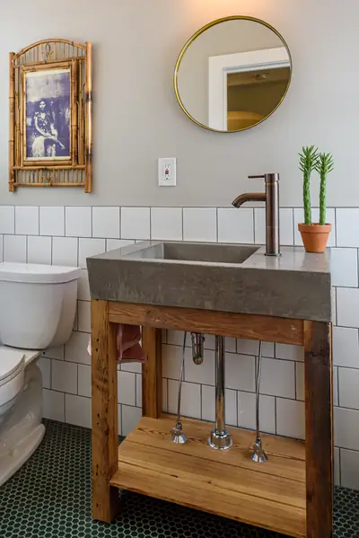

McPherson Street
A birch kitchen with walnut pulls and glass-inlaid concrete counters, plus a powder room with an integral concrete sink.
- Location
- Philadelphia, PA
- Year
- 2020
- Scope
- Kitchen, powder room, cabinetry, concrete
- Photography
- Isaac Turner







